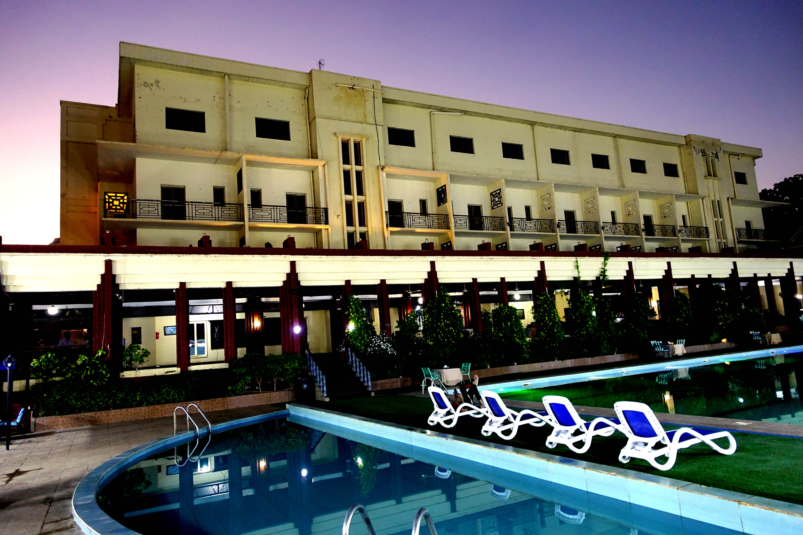

مسودة لمراجعة صاحب الموقع — غير معتمدة للنشر
Initial manuscript; research and image checks remain. مسودة أولى؛ البحث وفحص الصور لم يكتملَا.

يحفظ الفندق نوعين من التاريخ. أحدهما مرئي في الواجهة والغرف والسلالم والتعديلات، والآخر يعيش في العمل والذاكرة: من أعد الطعام، ورتب رحلة، وصان المبنى، واستقبل ضيفاً عائداً، أو ترجم حواراً صعباً. والتاريخ الذي يسجل المشاهير وحدهم يحتفظ بأبرز أسماء دفتر الضيوف ويفقد كثيراً من المؤسسة.
تستحق فنادق السودان الاهتمام بوصفها أماكن التقت فيها المدينة بالقادمين من خارجها. ارتبطت بالتجارة والسفر والعمل العائلي وتغير معنى الراحة. ويمكن رواية تاريخها من دون اختزاله في مبانٍ فخمة أو افتراض عصر ذهبي لكل فندق قديم.
الأدلة متفاوتة. تركز هذه المعالجة الأولى على الخرطوم، حيث تتوافر سجلات وصور أوضح. ولا ينبغي أن تمثل البلاد كلها. تحتاج بورتسودان وعطبرة وغيرهما إلى تواريخ فندقية موثقة، لا إلى ذكر عابر يجعل الخريطة تبدو مكتملة.
يرجع عالم الآثار ألكسندروس تساكوس في نعي علمي شخصي تأسيس الأكروبول إلى باناغيس باغولاتوس عام ١٩٥٢، ويصف دور الأسرة اللاحق في إدارته. ويتذكر لقاء جورج باغولاتوس في ١٩٩٤ وتعريفه بآثاريين آخرين. يوضح حسابه كيف تساعد الضيافة والمعرفة العملية في انطلاق العمل الميداني.[1]
هذه شهادة قيّمة من مشارك، وليست أرشيفاً تجارياً كاملاً. فهي تخبرنا بمعنى الفندق لجماعة بعينها، وينبغي قراءتها مع روايات أخرى ومع عمل الموظفين السودانيين الذين لا تُستعاد مساهمتهم بمجرد بروز أسماء الملاك.
الفكرة المهمة أن الفندق يقدم أكثر من المبيت. يحتاج القادم إلى مكان غير مألوف إلى نصيحة موثوقة وترتيب نقل ومعارف ومساعدة في فهم الإجراءات. تعتمد هذه الخدمات على الخبرة والثقة، ويصعب رؤيتها في صورة غرفة أو استبدالها بمجرد إنشاء مبنى أحدث.
قد تثبت صورة هيئة واجهة في تاريخ محدد، لكنها لا تثبت وحدها سنة التأسيس أو استمرارية الملكية أو جودة الخدمة. وكثيراً ما تجمع الأوصاف الترويجية هذه الادعاءات وكأنها حقيقة واحدة.
يصف مساهم صور الفندق الكبير على كومنز الفندق بأنه يعود إلى ١٩٠٢. يحتاج هذا التاريخ إلى توثيق مستقل قبل تقديمه بوصفه حقيقة محسومة. أما صورة الفناء المقترحة فتفيد في غرض أضيق: إظهار هيئة معمارية سابقة. ويبقى وقت التقاطها غير مؤكد، رغم ختم زمني للكاميرا لا ينبغي الوثوق به تلقائياً.[2]
يسمح هذا التمييز بالاستمتاع بالصور من دون تحميلها ما لا تثبته. يمكن تأمل الشرفات والظل والحركة، والسؤال عن التعامل مع الحر والاجتماع. ولا يصح استنتاج تجربة كل ضيف وعامل من منظر منتقى بعناية.
يعمل في الفنادق أشخاص نادراً ما تُخلد معرفتهم بلوحة. فالطاهي الذي يعرف المواد المتاحة باستمرار، وعامل الصيانة الذي يبقي المياه جارية، وموظف الاستقبال الذي يتذكر حجزاً معقداً، يصنعون الاستمرارية. ينبغي للتاريخ الجاد البحث عن أسمائهم ورواياتهم حيث يسمح الدليل والموافقة.
وينبغي أن يسأل أيضاً مَن كان يستطيع دفع الكلفة، ومَن كان مرحباً به، وكيف عكست الخدمة تفاوتات زمنها. لا تسلب هذه الأسئلة المكان محبته، بل تجعلها أصدق. فقد يكون البناء محبوباً وتحتوي سيرته علاقات غير متكافئة.
مذكرات المسافرين مفيدة، لكنها محددة بزاوية النظر. قد يتذكر الزائر الفندق بوصفه مركز المدينة لأنه كان مركز إقامته، بينما عاش السكان مدينة أوسع بكثير. وتساعد مقارنة شهادات الضيوف بالصحف والإعلانات وتواريخ العمل وسجلات الأسر في منع زاوية مألوفة من احتكار الحكاية.
تضمن تقرير للإذاعة العامة الأمريكية في يونيو ٢٠٢٥ شهادة من أسرة باغولاتوس عن الأكروبول وتدميره أثناء الحرب. إنه وصف مؤرخ للخسارة، وليس معاينة حالية لكل جزء من العقار.[3] ولا يجوز استخدامه أو استخدام صورة قديمة للإيحاء بأن الفندق يعمل أو أن زيارته آمنة اليوم.
لكن الحكاية لا يلزم أن تنتهي عند الدمار. فقد تحفظ قائمة طعام أو صورة مؤرخة أو رسماً معمارياً أو شهادة عامل أدلة معرضة للفقد. ينبغي حفظ الأصول وتوثيق الإذن وتحديد المعروف عن كل مادة. والتاريخ غير المؤكد أفضل من تعليق واثق مختلق.
وستثير إعادة البناء، إن أصبحت ممكنة، اختيارات بشأن ما يُحفظ ومن تخدمه المؤسسة المستعادة. لا تعيد الهيئة التاريخية وحدها العلاقات التي ميزت المكان، كما لا يمحو كل تعديل التراث. المطلوب فهم القيمة قبل تقرير ما ينبغي تغييره.
أكثر تواريخ الفنادق السودانية وعداً هو الذي يصل المباني بالطرق وسبل العيش: لماذا جاء المسافرون، وكيف وصلوا، ومن استضافهم، وما الخدمات التي نمت حولهم؟ عندها يصبح الفندق وسيلة لقراءة تغير المدينة، لا خلفية جميلة لمغامرة شخص آخر.
وهنا أيضاً صلته بموقع يهتم بالتنمية. تجمع الضيافة البناء والطعام والنقل واللغات والصيانة والحكم العملي. ويبين تاريخها أن اقتصاد الخدمات يصنعه الناس وعلاقاتهم ومهاراتهم، إلى جانب الأسرّة. وتمنح استعادة هذه الصلات السودان أكثر من سجل واجهات مفقودة.
المراجع
[1] ألكسندروس تساكوس، نعي جورج باغولاتوس، مجلة دوتاوو: https://pages.sandpoints.org/dotawo/_preview/article/obituary_pagoulatos/
[2] صورة الفندق الكبير وبيانات المساهم وترخيص CC BY-SA 4.0: https://commons.wikimedia.org/wiki/File:Grand_Hotel_Khartoum_Sudan.jpg
[3] إيمانويل أكينوتو، تقرير NPR المنشور لدى WBAA، ١٥ يونيو ٢٠٢٥: https://www.wbaa.org/2025-06-15/khartoums-acropole-hotel-survivor-of-coups-and-attacks-succumbs-to-civil-war
فحوص لم تُستكمل: توثيق مستقل لتأسيس الفندق الكبير وعمارته، وسجلات فنادق إقليمية، وشهادات العاملين، وسجل صورة الأكروبول. هذه مسودة أولى، وليست بعدُ المعالجة التاريخية الواسعة المطلوبة. لم تُجر مقابلات أصلية، ومقطع كابلان من المكتبة مسار بحث لا اقتباس محقق ولا قراءة كاملة للكتاب.